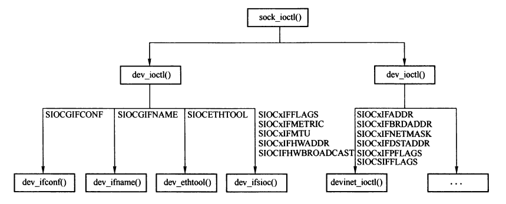
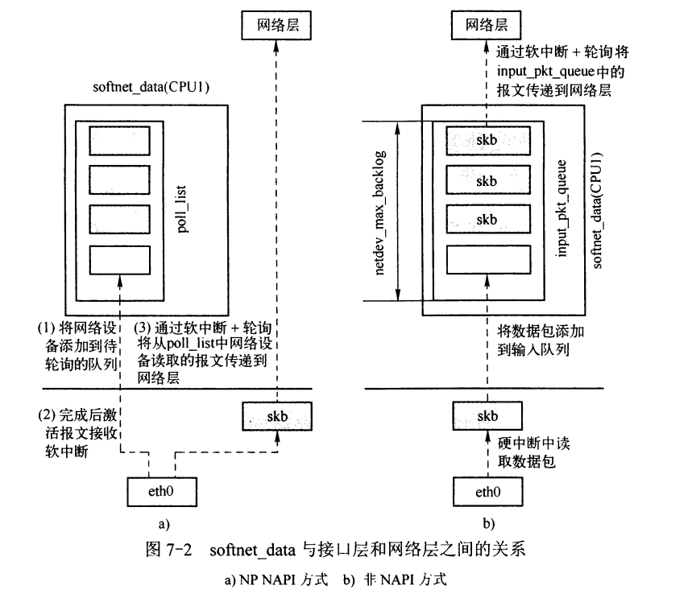
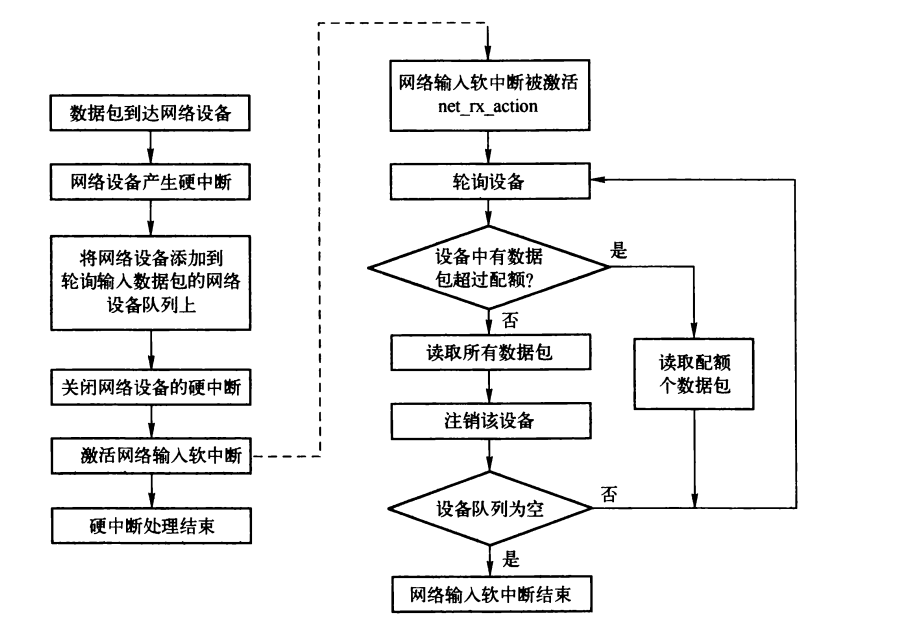
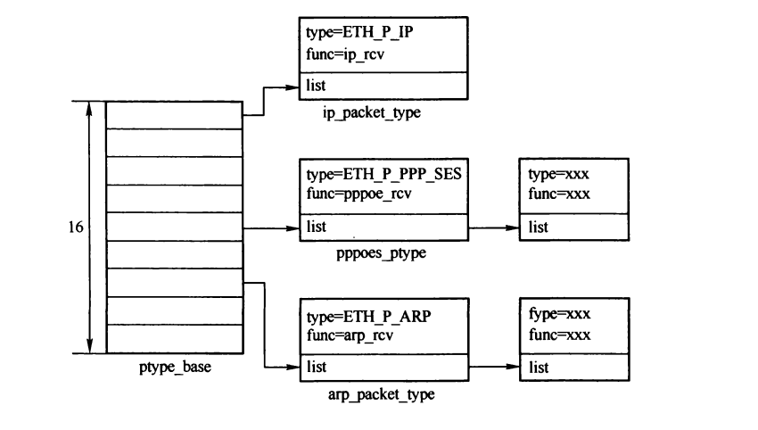
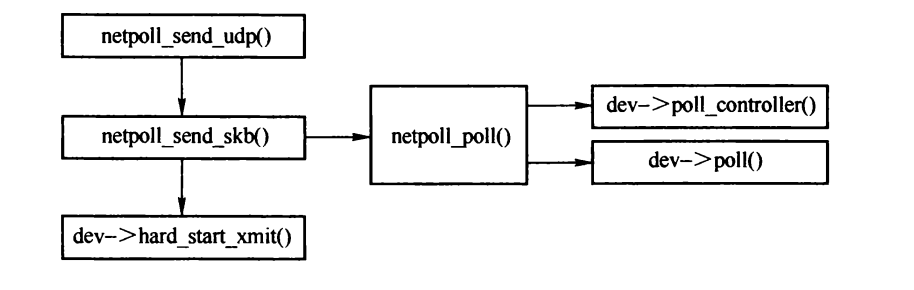

接口层的输入
Table of Contents
1 系统参数
- dev_weigh 数据包输入软中断中，单个网络设备可读取的报文配额。
- netdev_budget 数据包输入软中断中，所有网络设备可从网络设备读取的报文总配额。
- netdev_max_backlog 非NAPI链路层的缓存队列长度上限。
- message_burst和message_const 用来限制网络模块警告消息的频率，message_const 为记录的时间间隔， message_burst为最多连续记录消息的次数。
2 接口层ioctl
对于接口层的ioctl操作，最终由 dev_ioctl() 和 inet_ioctl() 处理。

Figure 1: 接口层ioctl函数调用关系
2.1 SIOCxIFxxx类命令
此类命令执行设置或者读取操作，通过struct ifreq 结构传递参数。
struct ifreq { union { char ifrn_name[IFNAMSIZ]; /* if name, e.g. "en0" */ } ifr_ifrn; union { struct sockaddr ifru_addr; struct sockaddr ifru_dstaddr; struct sockaddr ifru_broadaddr; struct sockaddr ifru_netmask; struct sockaddr ifru_hwaddr; short ifru_flags; int ifru_ivalue; int ifru_mtu; struct ifmap ifru_map; char ifru_slave[IFNAMSIZ]; /* Just fits the size */ char ifru_newname[IFNAMSIZ]; void __user * ifru_data; struct if_settings ifru_settings; } ifr_ifru; };
#caption: 操作命令
| 命令 | 描述 |
|---|---|
| SIOCGIFCONF | 获取接口配置信息（struct ifconf） |
| SOICGIFNAME和SIOCSIFNAME | 接口名称 |
| SOICGIFFLAGS和SIOCSIFFLAG | 网络设备的标志 |
| SOICGIFMETRIC和SIOCSIFMETRIC | 网络设备的metric |
| SIOCGIFMTU和SIOCSIFMTU | mtu |
| SIOCGIFHWADDR和SIOCSIFHWADDR | 硬件地址 |
| SIOCGIFMAP和SIOCSIFMAP | 接口的硬件参数，共享内存、I/O基地址、中断等(struct ifmap结构) |
| SIOCGIFINDEX | 网络设备索引号 |
| SIOCGIFTXQLEN和SIOCSIFTXQLEN | 传输队列长度 |
| SIOCGIFADDR和SIOCSIFADDR | 本地地址 |
| SIOCGIFPFLAGS和SIOCSIFPFLAGS | 扩展标志 |
| SIOCGIFNETMASK和SIOCSIFNETMASK | 地址掩码 |
| SIOCADDMULTI和SIOCDELMULTI | 网络设备的组播过滤器 |
| SIOCSIFHWBROADCAST | 获取、添加或者删除网络设备的硬件广播地址 |
| SIOCGIFDSTADDR和SIOCSIFDSTADDR | 点对点的对端IP地址 |
| SIOCGIFBRDADDR和SIOCSIFBRDADDR | 组播地址 |
2.2 SIOCETHTOOL
SIOCETHTOOL是以太网设备的专用操作命令，支持多个子命令，不同子命令有不同的命令结构。 例如 ETHTOOL_GSET和ETHTOOL_SSET分别为获取和设置对应的配置，命令结构为ethtool_cmd结构。
2.3 私有命令
- SIOCGMIIPHY 获取MII的PHY地址
- SIOCGMIIREG和SIOCSMIIREG 获取和设置MII的PHY寄存器
3 接口层初始化
net_dev_init() 用来初始化相关的接口层，其优先级为 subsys_initcall。
/* * This is called single threaded during boot, so no need * to take the rtnl semaphore. */ static int __init net_dev_init(void) { int i, rc = -ENOMEM; BUG_ON(!dev_boot_phase); if (dev_proc_init()) //注册统计相关的proc文件 goto out; if (netdev_sysfs_init()) //sysfs文件系统 goto out; //初始化ptype_all链表 和 ptype_base散列表 INIT_LIST_HEAD(&ptype_all); for (i = 0; i < 16; i++) INIT_LIST_HEAD(&ptype_base[i]); for (i = 0; i < ARRAY_SIZE(dev_name_head); i++) //设备名称散列表 INIT_HLIST_HEAD(&dev_name_head[i]); for (i = 0; i < ARRAY_SIZE(dev_index_head); i++) INIT_HLIST_HEAD(&dev_index_head[i]); //设备索引散列表 /* 初始化数据包接收队列 */ for_each_possible_cpu(i) { struct softnet_data *queue; queue = &per_cpu(softnet_data, i); skb_queue_head_init(&queue->input_pkt_queue);//接收队列 queue->completion_queue = NULL;//等待释放队列 INIT_LIST_HEAD(&queue->poll_list); //非NAPI的输入队列 set_bit(__LINK_STATE_START, &queue->backlog_dev.state); queue->backlog_dev.weight = weight_p; queue->backlog_dev.poll = process_backlog; atomic_set(&queue->backlog_dev.refcnt, 1); } netdev_dma_register();//注册DMA客户端 dev_boot_phase = 0; open_softirq(NET_TX_SOFTIRQ, net_tx_action, NULL); //输入软中断 open_softirq(NET_RX_SOFTIRQ, net_rx_action, NULL); //输出软中断 hotcpu_notifier(dev_cpu_callback, 0); //CPU状态变化的回调函数 dst_init(); //注册网络状态变化的回调函数（dev_cpu_callback()函数） dev_mcast_init();// 注册/proc/net/dev_macast 文件 rc = 0; out: return rc; } subsys_initcall(net_dev_init);
4 softnet_data结构
struct softnet_data 结构描述了与网络软中断处理相关的报文输入和输出队列，每个CPU有一个单独的softnet_data实例。

Figure 2: softnet_data、接口层、网络层的关系
struct softnet_data { struct net_device *output_queue; //输出软中断中的数据包输出队列 struct sk_buff_head input_pkt_queue; //非NAPI接口层的缓存队列 struct list_head poll_list; //网络设备轮询队列 struct sk_buff *completion_queue;//等待释放队列 struct net_device backlog_dev;//非NAPI驱动的虚拟网络设备 struct dma_chan *net_dma; };
5 NAPI
NAPI是中断机制和轮询机制的混合，可以有效提高网络处理速度。
NAPI的报文输入流程：

Figure 3: NAPI方式输入报文流程
5.1 网络设备的中断例程
以e100为例：
static irqreturn_t e100_intr(int irq, void *dev_id) { struct net_device *netdev = dev_id; struct nic *nic = netdev_priv(netdev); u8 stat_ack = readb(&nic->csr->scb.stat_ack); DPRINTK(INTR, DEBUG, "stat_ack = 0x%02X\n", stat_ack); if(stat_ack == stat_ack_not_ours || /* 中断是否由网络设备激活 */ stat_ack == stat_ack_not_present) /* 设备拔出 */ return IRQ_NONE; /* 响应中断 */ writeb(stat_ack, &nic->csr->scb.stat_ack); if(stat_ack & stat_ack_rnr) nic->ru_running = RU_SUSPENDED; //网络设备正常，且还未轮询接收报文 if(likely(netif_rx_schedule_prep(netdev))) { e100_disable_irq(nic);//禁止设备中断 __netif_rx_schedule(netdev);//激活报文接收软中断 } return IRQ_HANDLED; }
5.2 网络输入软中断
static void net_rx_action(struct softirq_action *h) { struct softnet_data *queue = &__get_cpu_var(softnet_data);//获取CPU softnet_data unsigned long start_time = jiffies; int budget = netdev_budget; //报文接收配额 void *have; local_irq_disable(); while (!list_empty(&queue->poll_list)) { //轮询队列的网络设备 struct net_device *dev; //读取配额用尽，或者处理时间大于1ms，则退出处理 if (budget <= 0 || jiffies - start_time > 1) goto softnet_break; local_irq_enable(); dev = list_entry(queue->poll_list.next, struct net_device, poll_list);//取出网络设备 have = netpoll_poll_lock(dev); //如果设备本次配额用尽或者轮询后还有报文未读取 if (dev->quota <= 0 || dev->poll(dev, &budget)) { netpoll_poll_unlock(have); local_irq_disable(); list_move_tail(&dev->poll_list, &queue->poll_list);//设备移动到队尾 if (dev->quota < 0)//重新设置设备配额 dev->quota += dev->weight; else dev->quota = dev->weight; } else { netpoll_poll_unlock(have); dev_put(dev); local_irq_disable(); } } out: if (net_dma_client) { struct dma_chan *chan; rcu_read_lock(); list_for_each_entry_rcu(chan, &net_dma_client->channels, client_node) dma_async_memcpy_issue_pending(chan); rcu_read_unlock(); } local_irq_enable(); return; softnet_break: __get_cpu_var(netdev_rx_stat).time_squeeze++; __raise_softirq_irqoff(NET_RX_SOFTIRQ); goto out; }
5.3 轮询处理报文
e100网络设备驱动通过 e100_poll() 函数处理。
static int e100_poll(struct net_device *netdev, int *budget) { struct nic *nic = netdev_priv(netdev); unsigned int work_to_do = min(netdev->quota, *budget); unsigned int work_done = 0; int tx_cleaned; //从网络设备读取接收到的报文，并通过 netif_receive_skb() 输入到上层协议中 e100_rx_clean(nic, &work_done, work_to_do); tx_cleaned = e100_tx_clean(nic); //释放已经发送的报文 /*如果待输出报文和输入报文都处理完成或者设备未激活，退出轮询模式*/ if((!tx_cleaned && (work_done == 0)) || !netif_running(netdev)) { netif_rx_complete(netdev);//将设备从轮询队列移除 e100_enable_irq(nic);//开中断 return 0; } *budget -= work_done; //更新总配额 netdev->quota -= work_done;//更新网络设备配额 return 1; }
6 非NAPI
6.1 netif_rx()
netif_rx() 将网络设备接收的报文加入到接口层的缓存队列，以便上层协议处理。
NAPI网络驱动不会调用该接口接收报文。
/** * netif_rx - post buffer to the network code * @skb: buffer to post * return values: * NET_RX_SUCCESS (没有发生拥塞) * NET_RX_CN_LOW (轻度拥塞) * NET_RX_CN_MOD (中度拥塞) * NET_RX_CN_HIGH (高度拥塞) * NET_RX_DROP (报文被丢弃) * */ int netif_rx(struct sk_buff *skb) { struct softnet_data *queue; unsigned long flags; /* 将数据包传递给netpoll模块 */ if (netpoll_rx(skb)) return NET_RX_DROP; if (!skb->tstamp.off_sec) net_timestamp(skb); //记录接收时间戳 local_irq_save(flags); queue = &__get_cpu_var(softnet_data); //获取cpu缓存队列 __get_cpu_var(netdev_rx_stat).total++; if (queue->input_pkt_queue.qlen <= netdev_max_backlog) {//队列未满 if (queue->input_pkt_queue.qlen) {//输入队列不为空 enqueue: dev_hold(skb->dev); __skb_queue_tail(&queue->input_pkt_queue, skb);//加入输入队列 local_irq_restore(flags); return NET_RX_SUCCESS; } //队列为空，说明还未被软中断处理过，将backlog_dev设备加入设备轮询队列，并激活接收软中断 netif_rx_schedule(&queue->backlog_dev); goto enqueue; } //队列已满，丢弃报文 __get_cpu_var(netdev_rx_stat).dropped++; local_irq_restore(flags); kfree_skb(skb); return NET_RX_DROP; }
6.2 process_backlog()
非NAPI方式下， 通过 process_backlog() 函数轮询虚拟网络设备 backlog_dev。
static int process_backlog(struct net_device *backlog_dev, int *budget) { int work = 0; int quota = min(backlog_dev->quota, *budget); struct softnet_data *queue = &__get_cpu_var(softnet_data); unsigned long start_time = jiffies; backlog_dev->weight = weight_p; for (;;) { struct sk_buff *skb; struct net_device *dev; local_irq_disable(); skb = __skb_dequeue(&queue->input_pkt_queue);//获取报文 if (!skb)//为空则处理完成 goto job_done; local_irq_enable(); dev = skb->dev; netif_receive_skb(skb);//传递到上层协议 dev_put(dev); work++; if (work >= quota || jiffies - start_time > 1) //达到配额，或者超时 break; } //更新配额 backlog_dev->quota -= work; *budget -= work; return -1; job_done: //处理完成后的操作 backlog_dev->quota -= work; *budget -= work; list_del(&backlog_dev->poll_list);//从设备轮询队列移除 backlog_dev smp_mb__before_clear_bit(); netif_poll_enable(backlog_dev); local_irq_enable(); return 0; }
7 接口层数据报文的处理
7.1 报文接收例程
packet_type结构是网络层输入的接口。
struct packet_type { __be16 type; /* 链路层报文承载网络层报文的协议号*/ struct net_device *dev; /* 指定接收数据包的设备，为NULL表示接收所有设备的数据包 */ //协议接收处理的入口函数。 int (*func) (struct sk_buff *, struct net_device *, struct packet_type *, struct net_device *); //传输层的GSO分段函数 struct sk_buff *(*gso_segment)(struct sk_buff *skb,int features); //调用传输层GSO分段前，对伪首部计算校验和。 int (*gso_send_check)(struct sk_buff *skb); void *af_packet_priv; //存储协议族的私有数据 struct list_head list; //连接不同协议族接收例程的链表元素 }; //IPv4实例： static struct packet_type ip_packet_type = { .type = __constant_htons(ETH_P_IP), .func = ip_rcv, .gso_send_check = inet_gso_send_check, .gso_segment = inet_gso_segment, };
大部分的 packet_type 结构的实例通过dev_add_pack()函数添加到 ptype_base 散列表。
PF_PACKET协议族，type为 ETH_P_ALL 的packet_type实例则是注册到ptype_all链表。

Figure 4: ptype_base散列表
7.2 netif_receive_skb()
netif_receive_skb()将报文输入到上层协议。
int netif_receive_skb(struct sk_buff *skb) { struct packet_type *ptype, *pt_prev; struct net_device *orig_dev; int ret = NET_RX_DROP; __be16 type; /* 如果是通过NAPI方式输入，则先输入给netpoll模块 */ if (skb->dev->poll && netpoll_rx(skb)) return NET_RX_DROP; if (!skb->tstamp.off_sec) //时间戳 net_timestamp(skb); if (!skb->input_dev)//设置接收报文的设备 skb->input_dev = skb->dev; orig_dev = skb_bond(skb); //bonding中，获取报文的输入设备 if (!orig_dev) return NET_RX_DROP; __get_cpu_var(netdev_rx_stat).total++; skb->h.raw = skb->nh.raw = skb->data; skb->mac_len = skb->nh.raw - skb->mac.raw; pt_prev = NULL; rcu_read_lock(); #ifdef CONFIG_NET_CLS_ACT //包分类器相关 if (skb->tc_verd & TC_NCLS) { skb->tc_verd = CLR_TC_NCLS(skb->tc_verd); goto ncls; } #endif //遍历packet_all链表 list_for_each_entry_rcu(ptype, &ptype_all, list) { if (!ptype->dev || ptype->dev == skb->dev) { if (pt_prev)//输入报文到对应的协议族 ret = deliver_skb(skb, pt_prev, orig_dev); pt_prev = ptype; } } #ifdef CONFIG_NET_CLS_ACT if (pt_prev) { ret = deliver_skb(skb, pt_prev, orig_dev); pt_prev = NULL; /* noone else should process this after*/ } else { skb->tc_verd = SET_TC_OK2MUNGE(skb->tc_verd); } ret = ing_filter(skb); if (ret == TC_ACT_SHOT || (ret == TC_ACT_STOLEN)) { kfree_skb(skb); goto out; } skb->tc_verd = 0; ncls: #endif //处理bridge， 将报文输入给bridge if (handle_bridge(&skb, &pt_prev, &ret, orig_dev)) goto out; type = skb->protocol; //遍历ptype_base散列表 list_for_each_entry_rcu(ptype, &ptype_base[ntohs(type)&15], list) { if (ptype->type == type && (!ptype->dev || ptype->dev == skb->dev)) { if (pt_prev)//输入报文到对应的协议族 ret = deliver_skb(skb, pt_prev, orig_dev); pt_prev = ptype; } } if (pt_prev) {//输入报文到对应的协议族 ret = pt_prev->func(skb, skb->dev, pt_prev, orig_dev); } else { kfree_skb(skb); /* Jamal, now you will not able to escape explaining * me how you were going to use this. :-) */ ret = NET_RX_DROP; } out: rcu_read_unlock(); return ret; }
7.3 dev_queue_xmit_nit()
通过 socket(AF_PACKET, SOCK_RAW, htons(ETH_P_ALL)) 创建的原始套接字，既可以接收外部输入的数据包，也可以接收本地输出的数据包。
dev_queue_xmit_nit() 用于结婚搜本地输出的数据包，链路层输出过程中会调用该函数。
//dev 输出数据包的网络设备 //skb 待输出数据包 static void dev_queue_xmit_nit(struct sk_buff *skb, struct net_device *dev) { struct packet_type *ptype; net_timestamp(skb); //记录时间戳 rcu_read_lock(); list_for_each_entry_rcu(ptype, &ptype_all, list) { //遍历ptype_all if ((ptype->dev == dev || !ptype->dev) && (ptype->af_packet_priv == NULL || (struct sock *)ptype->af_packet_priv != skb->sk)) { //额外输入到RAW，需要克隆skb struct sk_buff *skb2= skb_clone(skb, GFP_ATOMIC); if (!skb2) break; //校验数据包的有效性 skb2->mac.raw = skb2->data; if (skb2->nh.raw < skb2->data || skb2->nh.raw > skb2->tail) { if (net_ratelimit()) printk(KERN_CRIT "protocol %04x is " "buggy, dev %s\n", skb2->protocol, dev->name); skb2->nh.raw = skb2->data; } //输入到RAW套接字 skb2->h.raw = skb2->nh.raw; skb2->pkt_type = PACKET_OUTGOING; ptype->func(skb2, skb->dev, ptype, skb->dev); } } rcu_read_unlock(); }
8 CPU状态变化时的处理
CPU有各自的softnet_data队列，当CPU状态变为 CPU_DEAD 时，需要将队列中报文交给其他CPU处理。
dev_cpu_callback()函数用来处理cpu状态变化， 通过hotcpu_notifier()注册。
static int dev_cpu_callback(struct notifier_block *nfb,//响应cpu状态变化的信息块 unsigned long action, //状态变化cpu的当前状态 void *ocpu) //状态变化的cpu { struct sk_buff **list_skb; struct net_device **list_net; struct sk_buff *skb; unsigned int cpu, oldcpu = (unsigned long)ocpu; struct softnet_data *sd, *oldsd; if (action != CPU_DEAD) //之处理CPU_DEAD状态 return NOTIFY_OK; local_irq_disable(); cpu = smp_processor_id(); sd = &per_cpu(softnet_data, cpu); //当前cpu的队列 oldsd = &per_cpu(softnet_data, oldcpu); //下线cpu的队列 list_skb = &sd->completion_queue; while (*list_skb) list_skb = &(*list_skb)->next; //获取completion_queue的结束位置 /* 将下线cpu的completion_queue 移动至当前cpu*/ *list_skb = oldsd->completion_queue; oldsd->completion_queue = NULL; /* 获取output_queue的结束位置 */ list_net = &sd->output_queue; while (*list_net) list_net = &(*list_net)->next_sched; /* 追加到当前cpu的output_queue */ *list_net = oldsd->output_queue; oldsd->output_queue = NULL; raise_softirq_irqoff(NET_TX_SOFTIRQ);//激活输出软中断 local_irq_enable(); /* 处理下线CPU的 input_pkt_queue */ while ((skb = __skb_dequeue(&oldsd->input_pkt_queue))) netif_rx(skb);//输入到上层协议 return NOTIFY_OK; }
9 netpoll
netconsole 通过netpoll框架将信息通过UDP发送到监控主机。
9.1 netpoll结构
netpoll实例分为 能接收数据包 和 不能接收数据包 两种类型。
struct netpoll { struct net_device *dev; //绑定的设备 char dev_name[IFNAMSIZ]; //设备名 const char *name; //netpoll实例名称 //报文接收处理例程。 void (*rx_hook)(struct netpoll *, int, char *, int); //本机ip和远端ip u32 local_ip, remote_ip; u16 local_port, remote_port; u8 local_mac[ETH_ALEN], remote_mac[ETH_ALEN]; };
如果支持netpoll，则对应网络设备的net_device实例必须实现 npinfo 成员。
struct netpoll_info { atomic_t refcnt; //引用计数 spinlock_t poll_lock; //网络设备poll接口的并发访问锁 int poll_owner; //正从网络设备读取数据包的cpu int rx_flags; spinlock_t rx_lock;//netpoll输入操作的并发访问锁 struct netpoll *rx_np; //描述netpoll的接收信息和发送信息 struct sk_buff_head arp_tx; //存储接收的arp报文 struct sk_buff_head txq; //报文缓存队列（传输失败或者设备繁忙） struct delayed_work tx_work; //用于输出txq的工作队列 };
如果要使用netpoll，还需要实现网络设备的 poll_controller 函数，该函数用来模拟网络设备发生中断，进行中断处理。 例如 e100_netpool。
9.2 netpoll实例的注册
netpoll_setup()函数用来注册netpoll实例。
int netpoll_setup(struct netpoll *np) { struct net_device *ndev = NULL; struct in_device *in_dev; struct netpoll_info *npinfo; unsigned long flags; int err; if (np->dev_name) ndev = dev_get_by_name(np->dev_name); if (!ndev) { printk(KERN_ERR "%s: %s doesn't exist, aborting.\n", np->name, np->dev_name); return -ENODEV; } np->dev = ndev; //将网络设备和netpoll实例关联 if (!ndev->npinfo) {//网络设备的netpoll信息块不存则，则需创建 npinfo = kmalloc(sizeof(*npinfo), GFP_KERNEL); //初始化工作 npinfo->rx_flags = 0; npinfo->rx_np = NULL; spin_lock_init(&npinfo->poll_lock); npinfo->poll_owner = -1; spin_lock_init(&npinfo->rx_lock); skb_queue_head_init(&npinfo->arp_tx); skb_queue_head_init(&npinfo->txq); INIT_DELAYED_WORK(&npinfo->tx_work, queue_process); atomic_set(&npinfo->refcnt, 1); } else {//存在，直接引用 npinfo = ndev->npinfo; atomic_inc(&npinfo->refcnt); } if (!ndev->poll_controller) { //必须实现网络设备的 poll_controller接口 printk(KERN_ERR "%s: %s doesn't support polling, aborting.\n", np->name, np->dev_name); err = -ENOTSUPP; goto release; } if (!netif_running(ndev)) {//设备还未启动 unsigned long atmost, atleast; printk(KERN_INFO "%s: device %s not up yet, forcing it\n", np->name, np->dev_name); rtnl_lock(); err = dev_open(ndev);//启动设备 rtnl_unlock(); atleast = jiffies + HZ/10; atmost = jiffies + 4*HZ; while (!netif_carrier_ok(ndev)) {//设备是否能传输数据包 if (time_after(jiffies, atmost)) { //等待4s printk(KERN_NOTICE "%s: timeout waiting for carrier\n", np->name); break; } cond_resched(); } if (time_before(jiffies, atleast)) {//如果0.1s内就发现设备可以传递数据包，则不可信，需要等待4s printk(KERN_NOTICE "%s: carrier detect appears" " untrustworthy, waiting 4 seconds\n", np->name); msleep(4000); } } if (is_zero_ether_addr(np->local_mac) && ndev->dev_addr) memcpy(np->local_mac, ndev->dev_addr, 6);//从网络设备获取mac地址 if (!np->local_ip) { rcu_read_lock(); in_dev = __in_dev_get_rcu(ndev); if (!in_dev || !in_dev->ifa_list) { rcu_read_unlock(); printk(KERN_ERR "%s: no IP address for %s, aborting\n", np->name, np->dev_name); err = -EDESTADDRREQ; goto release; } //从设备获取IP地址 np->local_ip = ntohl(in_dev->ifa_list->ifa_local); rcu_read_unlock(); printk(KERN_INFO "%s: local IP %d.%d.%d.%d\n", np->name, HIPQUAD(np->local_ip)); } if (np->rx_hook) {//实现了rx_hook接口 spin_lock_irqsave(&npinfo->rx_lock, flags); npinfo->rx_flags |= NETPOLL_RX_ENABLED; //设置标志， 表示可以接收数据包 npinfo->rx_np = np; spin_unlock_irqrestore(&npinfo->rx_lock, flags); } /* 为发送UDP和ARP应答报文，创建SKB缓存区 */ refill_skbs(); /* 绑定netpoll信息块到设备 */ ndev->npinfo = npinfo; synchronize_rcu(); return 0; }
9.3 netpoll的输入
netpoll_rx() 是netpoll输入的入口函数，由 netif_rx() 和 netif_receive_skb() 函数调用。netpoll的输入之处理两种数据报，如果是ARP报文，则添加到 arp_tx 队列中，等待模拟中断处理; 如果是IP数据报，则输入到netpoll 实例：
int __netpoll_rx(struct sk_buff *skb) { int proto, len, ulen; struct iphdr *iph; struct udphdr *uh; struct netpoll_info *npi = skb->dev->npinfo; struct netpoll *np = npi->rx_np; if (!np) goto out; if (skb->dev->type != ARPHRD_ETHER) goto out; /* ARP报文 */ if (skb->protocol == __constant_htons(ETH_P_ARP) && atomic_read(&trapped)) { skb_queue_tail(&npi->arp_tx, skb); //输入到arp_tx队列 return 1; } proto = ntohs(eth_hdr(skb)->h_proto); if (proto != ETH_P_IP)//非IP数据报 goto out; if (skb->pkt_type == PACKET_OTHERHOST) //非本地的数据报 goto out; if (skb_shared(skb)) //报文被共享 goto out; iph = (struct iphdr *)skb->data; if (!pskb_may_pull(skb, sizeof(struct iphdr))) goto out; if (iph->ihl < 5 || iph->version != 4)//IP数据报无效 goto out; if (!pskb_may_pull(skb, iph->ihl*4)) goto out; if (ip_fast_csum((u8 *)iph, iph->ihl) != 0) goto out; len = ntohs(iph->tot_len); if (skb->len < len || len < iph->ihl*4) goto out; if (iph->protocol != IPPROTO_UDP) //非UDP数据报 goto out; len -= iph->ihl*4; uh = (struct udphdr *)(((char *)iph) + iph->ihl*4); ulen = ntohs(uh->len); if (ulen != len) goto out; if (checksum_udp(skb, uh, ulen, iph->saddr, iph->daddr)) goto out; if (np->local_ip && np->local_ip != ntohl(iph->daddr)) goto out; if (np->remote_ip && np->remote_ip != ntohl(iph->saddr)) goto out; if (np->local_port && np->local_port != ntohs(uh->dest)) goto out; np->rx_hook(np, ntohs(uh->source), //输入到netpoll实例 (char *)(uh+1), ulen - sizeof(struct udphdr)); kfree_skb(skb); return 1; out: if (atomic_read(&trapped)) { kfree_skb(skb); return 1; } return 0; }
9.3.1 trap状态
netpoll中有一个trapped全局变量，用以标识trap状态，通过netpoll_set_trap()设置当前的trap状态。
trap取值：
- 非0 所有处理的数据包，不满足条件直接丢弃，不传递到协议栈。
- 0 只处理满足条件的数据包，不满足的传递给协议栈。
9.3.2 netpoll_poll()
通过netpoll_poll()函数，模拟触发网络设备中断，然后利用其他CPU协助进行数据包轮询处理。
void netpoll_poll(struct netpoll *np) { if (!np->dev || !netif_running(np->dev) || !np->dev->poll_controller) return; /*调用poll_controller接口，模拟网络设备输入中断 */ np->dev->poll_controller(np->dev); if (np->dev->poll) poll_napi(np);//进行轮询读取报文 service_arp_queue(np->dev->npinfo); //处理arp_tx队列的ARP报文 zap_completion_queue(); //释放完成发送的数据包 } static void poll_napi(struct netpoll *np) { struct netpoll_info *npinfo = np->dev->npinfo; int budget = 16; if (test_bit(__LINK_STATE_RX_SCHED, &np->dev->state) &&//两次数据包输入软中断处理的间隙 npinfo->poll_owner != smp_processor_id() && //当前CPU不是上次处理软中断的CPU spin_trylock(&npinfo->poll_lock)) { npinfo->rx_flags |= NETPOLL_RX_DROP; atomic_inc(&trapped); np->dev->poll(np->dev, &budget); //调用接口的pool接口轮询接收报文 atomic_dec(&trapped); npinfo->rx_flags &= ~NETPOLL_RX_DROP; spin_unlock(&npinfo->poll_lock); } }
9.3.3 ARP报文处理
service_arp_queue() 会轮询获取并处理 arp_tx 队列的ARP报文。
static void service_arp_queue(struct netpoll_info *npi) { struct sk_buff *skb; skb = skb_dequeue(&npi->arp_tx); while (skb != NULL) { arp_reply(skb); //处理ARP报文 skb = skb_dequeue(&npi->arp_tx); } } static void arp_reply(struct sk_buff *skb) { struct netpoll_info *npinfo = skb->dev->npinfo; struct arphdr *arp; unsigned char *arp_ptr; int size, type = ARPOP_REPLY, ptype = ETH_P_ARP; __be32 sip, tip; unsigned char *sha; struct sk_buff *send_skb; struct netpoll *np = NULL; if (npinfo->rx_np && npinfo->rx_np->dev == skb->dev) np = npinfo->rx_np; if (!np) return; if (skb->dev->flags & IFF_NOARP) //设备不支持ARP return; if (!pskb_may_pull(skb, (sizeof(struct arphdr) + (2 * skb->dev->addr_len) + (2 * sizeof(u32))))) //ARP报文是否有效 return; skb->h.raw = skb->nh.raw = skb->data; arp = skb->nh.arph; if ((arp->ar_hrd != htons(ARPHRD_ETHER) && //非以太网不处理 arp->ar_hrd != htons(ARPHRD_IEEE802)) || arp->ar_pro != htons(ETH_P_IP) || arp->ar_op != htons(ARPOP_REQUEST)) return; arp_ptr = (unsigned char *)(arp+1); /* 获取发送方的硬件地址和IP地址 */ sha = arp_ptr; arp_ptr += skb->dev->addr_len; memcpy(&sip, arp_ptr, 4); arp_ptr += 4; /* 用于检测目的地址 */ arp_ptr += skb->dev->addr_len; memcpy(&tip, arp_ptr, 4); /* 非本机地址 非回环地址 非组播地址 */ if (tip != htonl(np->local_ip) || LOOPBACK(tip) || MULTICAST(tip)) return; //根据ARP请求分配ARP应答报文 size = sizeof(struct arphdr) + 2 * (skb->dev->addr_len + 4); send_skb = find_skb(np, size + LL_RESERVED_SPACE(np->dev), LL_RESERVED_SPACE(np->dev)); //填充ARP报文 send_skb->nh.raw = send_skb->data; arp = (struct arphdr *) skb_put(send_skb, size); send_skb->dev = skb->dev; send_skb->protocol = htons(ETH_P_ARP); /* 填充以太网帧首部 */ if (np->dev->hard_header && np->dev->hard_header(send_skb, skb->dev, ptype, sha, np->local_mac, send_skb->len) < 0) { kfree_skb(send_skb); return; } arp->ar_hrd = htons(np->dev->type); arp->ar_pro = htons(ETH_P_IP); arp->ar_hln = np->dev->addr_len; arp->ar_pln = 4; arp->ar_op = htons(type); arp_ptr=(unsigned char *)(arp + 1); memcpy(arp_ptr, np->dev->dev_addr, np->dev->addr_len); arp_ptr += np->dev->addr_len; memcpy(arp_ptr, &tip, 4); arp_ptr += 4; memcpy(arp_ptr, sha, np->dev->addr_len); arp_ptr += np->dev->addr_len; memcpy(arp_ptr, &sip, 4); //输出报文 netpoll_send_skb(np, send_skb); }
9.3.4 ip数据包处理
__netpoll_rx() 中，通过检查后， 调用np->rx_hook 将报文输入给netpoll实例的接收处理例程。
9.4 netpoll的输出
9.4.1 netpoll_send_udp()
netpoll_send_udp() 是netpoll提供的输出接口，需要输出数据时直接调用即可。

Figure 5: netpoll输出函数的调用关系
void netpoll_send_udp(struct netpoll *np, const char *msg, int len) { int total_len, eth_len, ip_len, udp_len; struct sk_buff *skb; struct udphdr *udph; struct iphdr *iph; struct ethhdr *eth; //计算长度，并分配SKB udp_len = len + sizeof(*udph); ip_len = eth_len = udp_len + sizeof(*iph); total_len = eth_len + ETH_HLEN + NET_IP_ALIGN; skb = find_skb(np, total_len, total_len - len); //复制数据 memcpy(skb->data, msg, len); skb->len += len; //初始化UDP数据包首部 skb->h.uh = udph = (struct udphdr *) skb_push(skb, sizeof(*udph)); udph->source = htons(np->local_port); udph->dest = htons(np->remote_port); udph->len = htons(udp_len); udph->check = 0; udph->check = csum_tcpudp_magic(htonl(np->local_ip), htonl(np->remote_ip), udp_len, IPPROTO_UDP, csum_partial((unsigned char *)udph, udp_len, 0)); if (udph->check == 0) udph->check = CSUM_MANGLED_0; //开始初始化IP数据包首部 skb->nh.iph = iph = (struct iphdr *)skb_push(skb, sizeof(*iph)); /* iph->version = 4; iph->ihl = 5; */ put_unaligned(0x45, (unsigned char *)iph); iph->tos = 0; put_unaligned(htons(ip_len), &(iph->tot_len)); iph->id = 0; iph->frag_off = 0; iph->ttl = 64; iph->protocol = IPPROTO_UDP; iph->check = 0; put_unaligned(htonl(np->local_ip), &(iph->saddr)); put_unaligned(htonl(np->remote_ip), &(iph->daddr)); iph->check = ip_fast_csum((unsigned char *)iph, iph->ihl); //开始初始化以太网帧首部 eth = (struct ethhdr *) skb_push(skb, ETH_HLEN); skb->mac.raw = skb->data; skb->protocol = eth->h_proto = htons(ETH_P_IP); memcpy(eth->h_source, np->local_mac, 6); memcpy(eth->h_dest, np->remote_mac, 6); //设置输出设备 skb->dev = np->dev; //输出SKB netpoll_send_skb(np, skb); }
9.4.2 netpoll_send_skb()
netpoll_send_skb()用来发送数据包，可以是UDP或者ARP。
static void netpoll_send_skb(struct netpoll *np, struct sk_buff *skb) { int status = NETDEV_TX_BUSY; unsigned long tries; struct net_device *dev = np->dev; struct netpoll_info *npinfo = np->dev->npinfo; //尚未创建netpoll信息块，或者设备尚未打开，或者设备被挂起 if (!npinfo || !netif_running(dev) || !netif_device_present(dev)) { __kfree_skb(skb); return; } if (skb_queue_len(&npinfo->txq) == 0 && //txq队列为空 npinfo->poll_owner != smp_processor_id()) {//当前cpu不是上次输入软中断的cpu unsigned long flags; local_irq_save(flags); if (netif_tx_trylock(dev)) { /* try until next clock tick */ for (tries = jiffies_to_usecs(1)/USEC_PER_POLL; tries > 0; --tries) { if (!netif_queue_stopped(dev)) status = dev->hard_start_xmit(skb, dev);//输出数据包 if (status == NETDEV_TX_OK) break; /* 模拟输入软中断输入数据包 */ netpoll_poll(np); udelay(USEC_PER_POLL); } netif_tx_unlock(dev); } local_irq_restore(flags); } if (status != NETDEV_TX_OK) { skb_queue_tail(&npinfo->txq, skb);//未成功输出，则挂到txq队列 schedule_delayed_work(&npinfo->tx_work,0); //调度tx_work工作队列 } }
9.5 tx_work工作队列
tx_work工作队列通过 netpoll_setup() 初始化。
int netpoll_setup(struct netpoll *np) { //...... INIT_DELAYED_WORK(&npinfo->tx_work, queue_process); } //tx_work 工作队列通过 queue_process 例程处理。 static void queue_process(struct work_struct *work) { struct netpoll_info *npinfo = container_of(work, struct netpoll_info, tx_work.work); struct sk_buff *skb; unsigned long flags; while ((skb = skb_dequeue(&npinfo->txq))) { //遍历txq队列的SKB struct net_device *dev = skb->dev; if (!netif_device_present(dev) || !netif_running(dev)) { __kfree_skb(skb); continue; } local_irq_save(flags); netif_tx_lock(dev); if (netif_queue_stopped(dev) || dev->hard_start_xmit(skb, dev) != NETDEV_TX_OK) {//传输SKB skb_queue_head(&npinfo->txq, skb); netif_tx_unlock(dev); local_irq_restore(flags); //发送失败，重新调度 schedule_delayed_work(&npinfo->tx_work, HZ/10); return; } netif_tx_unlock(dev); local_irq_restore(flags); } }
9.6 netpoll实例：netconsole
netconsole 可以将本机的dmesg系统信息通过网络发送到另一台主机上。
netconsole依赖netpoll框架，最终通过 netpoll_send_udp() 发送到监控主机。
9.6.1 netconsole参数
static char config[256]; module_param_string(netconsole, config, 256, 0); MODULE_PARM_DESC(netconsole, " netconsole=[src-port]@[src-ip]/[dev],[tgt-port]@<tgt-ip>/[tgt-macaddr]\n"); static struct netpoll np = { .name = "netconsole", .dev_name = "eth0", .local_port = 6665, .remote_port = 6666, .remote_mac = {0xff, 0xff, 0xff, 0xff, 0xff, 0xff}, }; static int configured = 0;
9.6.2 console
由于需要捕获console信息，需要实现console结构的实例并注册到系统。
static struct console netconsole = { .name = "netcon", .flags = CON_ENABLED | CON_PRINTBUFFER, .write = write_msg }; //通过write_msg输出console信息 static void write_msg(struct console *con, const char *msg, unsigned int len) { int frag, left; unsigned long flags; if (!np.dev) return; local_irq_save(flags); for(left = len; left; ) { frag = min(left, MAX_PRINT_CHUNK); netpoll_send_udp(&np, msg, frag); msg += frag; left -= frag; } local_irq_restore(flags); }
9.6.3 初始化
init_netconsole()是netconsole模块的初始化函数。
static int init_netconsole(void) { int err; if(strlen(config))//解析参数 option_setup(config); if(!configured) {//未配置参数 printk("netconsole: not configured, aborting\n"); return 0; } //注册netpoll实例 err = netpoll_setup(&np); if (err) return err; //注册netconsole实例 register_console(&netconsole); printk(KERN_INFO "netconsole: network logging started\n"); return 0; }